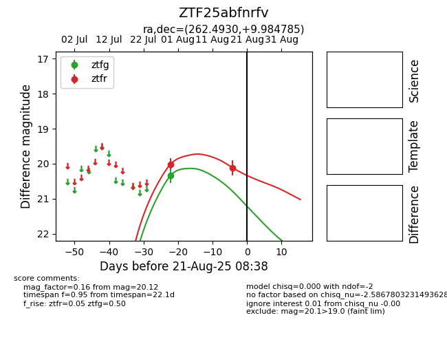

Target ZTF25abfnrfv at 2025-08-21 08:38, see:
FINK: fink-portal.org/ZTF25abfnrfv
Lasair: lasair-ztf.lsst.ac.uk/objects/ZTF25abfnrfv
ALeRCE: alerce.online/object/ZTF25abfnrfv
alt names
ZTF25abfnrfv (ztf,alerce)
coordinates:
equatorial (ra, dec) = (262.4930,+9.98479)
galactic (l, b) = (32.8092,+22.58831)
photometry
last ztfg=20.33, ztfr=20.12
1 ztfg, 2 ztfr detections
